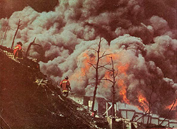
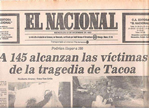
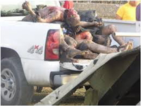
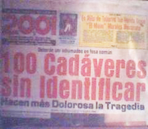
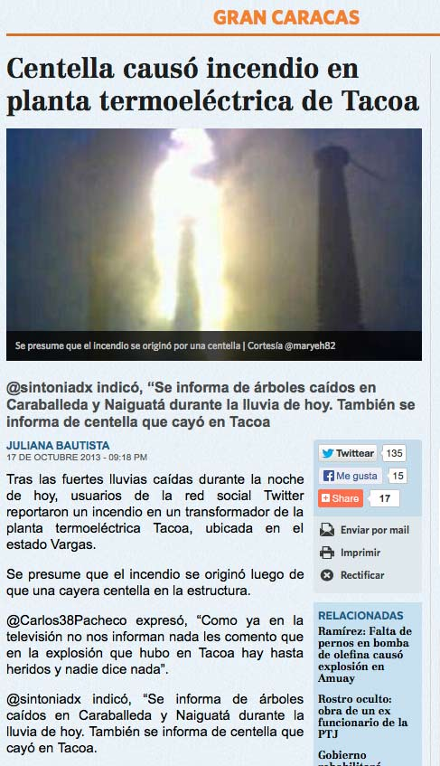

EMILIO HOME
LA TRAGEDIA DE TACOA
edo. Vargas, Venezuela
Diciembre 19, 1982
Ver también:
Videoarte de Benno Mauler & Emilio Mendoza:
Aloha Tacoa
, 1985
Tragedia del río
Guarapiche
, febrero, 2012
Accidente en
Amuay
, agosto, 2012
Incendio de
El Palito
, noviembre, 2013
TACOA, 1982
 
 
Accidente en Tacoa, de nuevo,
El Nacional
, Caracas, 17 de octubre, 2013
